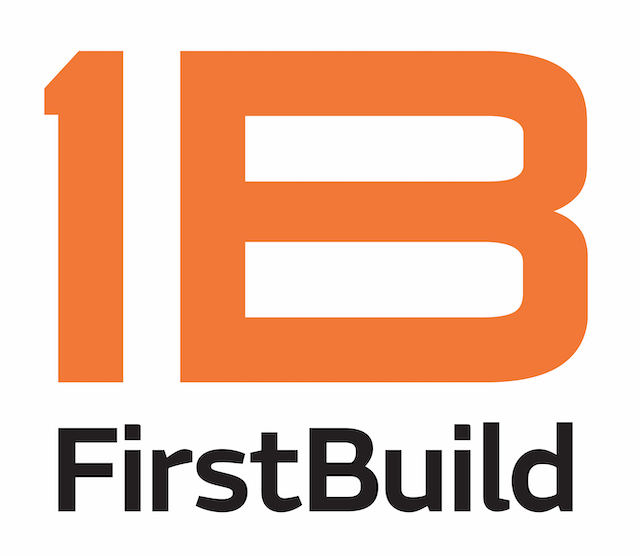

About Me
I'm a software-oriented Data Scientist, graduating from NYU Shanghai in May 2020.
Over the last 4 years, I've had the opportunity to work and perform research in 3 countries across 4 different industries.
In and out of University, I'm focused on developing my skills as a young Data Scientist, most recently through work in developing deployment-ready data products.
Here's what I've been up to
Here's where I've been
NYU Urban Data Science
Research Assistant, Oct 2019 - Current
Shanghai, CN
This fall I began research on dynamic urban geo-topic modeling under Professor ChengHe Guan with the goal of extracting "hot-topics" in urban development through public expression on Twitter. I developed a custom pipeline to preprocess, transform, & stream our dataset, gaining in-depth experience with the implementation of the NLTK and scikit-learn libraries.
PwC Advisory
Data & Analytics Intern, Jun 2019 - Aug 2019
New York, NY
I was tasked with the end-to-end development of python-based financial transaction screening automations and transaction data quality assessment tools.
As part of the internship, I Implemented an automated SQL DB quality evaluation process utilizing a Python ORM (SQLAlchemy) to determine client DB statistical properties.
In my short time, I was able to spearhead discussions with key account stakeholders regarding NLP and ML applications in PwC's Financial Crimes Unit.
Morgan Stanley
Risk Management Analyst, Nov 2018 - May 2019
New York, NY
To help support myself financially, I took up a part-time role at Morgan Stanley (22hrs/week) while enrolled full time in University.
I split my time between two teams, Vendor Management where I performed vendor database assessments to identify internall cross-unit discrepancies,
and Anti-Money Laundering where I performed associate-level negative news screenings, investigative functions, and built excel-based automations.
BDO Consulting
Corporate Finance Intern, Jun 2018 - Aug 2018
Tel-Aviv, Israel
BDO was the culmination of my studies in Finance. I performed comparables analysis, financial modeling, and valuations for leading Israeli tech startups and companies in the biotech, defense, and agriculture industries.
With my experience working in China, I produced a Purchase Price Allocation study for an Asian contract development biotech merger.
As a side-project, I developed an R-based program for comparable valuations built on Yahoo Finance and Bloomberg APIs.
TavTech
Coding Fellow, Dec 2017 - Jan 2018
Tel-Aviv, Israel
The TavTech fellowship was my first real forray into the worlds of Big Data and AI.
In addition to learning the foundations of Big Data tools (e.g. Apache Spark, Hadoop, HDFS), the fellowship culminated in a 48-hour hackathon, where I helped to develop
an application using machine vision to assist individuals with learning-disabilities.

GE Applicances: FirstBuild
Project Management Intern, Apr 2017 - Jul 2017
Shanghai, CN
My first internship as an undergrad in Shanghai, FirstBuild was a phenomenal opportunity to understand start-up culture as it exists in China.
As an intern, I coordinated weekly Thinktank sessions with FirstBuild's CEO and upper-level staff concerning minimum viable products
(FirstBuild functioned as a "Prototype Incubator"). I also standardized company brand materials across their many divisions.
How I keep busy
Urban Data Science Capstone
NLP Undergraduate Capstone
Updates to come. Stay tuned! Feel free to see my progress on GitHub.
HealthHub
Flask Based Full-Stack Application
HealthHub represents a semester-long team project for CSCI-410 Software Engineering, where I primarily played the role of a back-end engineer, structuring the database (i.e. MAMP)
as well as developing the MVC framework (Model: SQLAlchemy, View: Flask-Blueprints, Controller: Flask Instances), based on the popular Flask web app micro-framework.
The application includes an appointment scheduling system, a social forum, a file storage system, record-keeping, and an automated asynchronous notification system built on celery & redis.
MovieLens Visualization
Data Pre-Processing and Information Visualization
The MovieLens Dataset has been the subject of various kaggle competitions and is often used for educational purposes.
In this project, a friend and I decided to put our data visualization skills to the test (e.g. Python, D3.js, & HTML/CSS) and design visualizations that would
convey aspects of the dataset such as the historical relations between film revenues, release dates, and ranks, as well as provide
for a time-series snapshot of the industry (e.g. top grossing studios vs. films). We also used Singular Value Decomposition and
k-means clustering for classifying user tastes & preferences. Check out the Demo Link!
Predictive Analytics: Spotify Brand Mentions
Graduate Big Data Science Course Semester Project
In this project, we analyzed the daily occurrences of luxury brand mentions in Spotify's most
streamed songs and modeled the relationship between a brand's occurrences in popular songs with the
brand's popularity, as measured by Google Trends. We utilized Stanford Java Core-NLP for lemma generation,
LDA for topic generation, and ARIMA (e.g. a statistical model for measuring volatility), to predict brand popularity.
Technologies used include: Java, Core-NLP, Apache-Spark, High-performance Computing, & Python for web scrapping and data cleansing.
Cryptocurrency Asset Classification
Machine Learning Final Project
This project grew out of raw curiosity for the cryptocurrency market at the end of
2017, when the cyrpto market had peaked, collapsing in February of 2018, when it exhibited risk-asset like tendencies. I was curious as to what asset classes crypto most resembled.
To get there, I implemented advanced statistical models (e.g. GARCH and ARIMA) to gather features that measured volatility of assets, and paired these features with volume and return data
to build SVMs for predicting asset returns, and ANNs for classifying Assets. I concluded that Bitcoin behavior most resembled traditional currencies over commodities (e.g. gold) with inconclusive results in regards to SVMs.
What I'm good at
Data
Science
Science
Experienced in Natural Language Processing, Machine Learning (e.g. Regression, SVMs, ANNs etc.), Statistical Modeling (e.g. ARIMA, GARCH), & in building data pipelines for applications.
Software
Engineering
Engineering
Background in computer science with solid foundations in software lifecycles, object-oriented programming, data structures & algorithms and web app development frameworks (e.g. Python Flask, Javascript Dev.).
Information
Visualization
Visualization
Comprehensive experience with Javascript, Python, HTML/CSS toolkits for pre-processing and visualizing large datasets. Academic understanding of data-vis and vis-psychology.
Business
& Finance
& Finance
Bachelors in Finance, with experience working in Financial Intitutions and Financial Services. Full-understanding of foundational quant-finance models for Data Science.
Hover Over Categories
Contact Me
US Phone: +1 (732) 742-8094
CN Phone: +86 (186) 1671-2812
Email: alex.bogdanowicz@nyu.edu
CN Phone: +86 (186) 1671-2812
Email: alex.bogdanowicz@nyu.edu